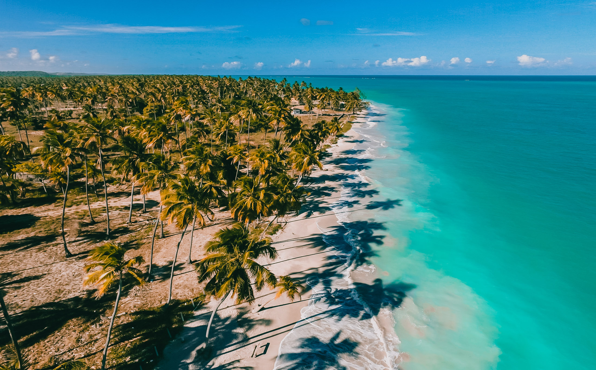

Maragogi, Brasil
As paisagens de Maragogi, em Alagoas, são famosas pelas águas cristalinas, que variam entre os tons de azul-turquesa e verde-esmeralda, e são complementadas por longos coqueirais, praias de areia clara e a formação de belas piscinas naturais durante a maré baixa. A região integra a Costa dos Corais, uma área de proteção ambiental com a segunda maior barreira de corais do mundo, sendo este cenário a principal atração, com passeios para as piscinas naturais como as Galés.
- Águas Transparentes: As águas de Maragogi são conhecidas por sua transparência e as diversas tonalidades de azul e verde, que encantam os visitantes e fazem da região um destino paradisíaco, muitas vezes chamado de "Caribe Brasileiro".
- Praias de Coqueiros: Ao longo da costa, os coqueirais formam belos cenários, destacando-se em praias como Antunes, que oferece um visual deslumbrante e é um dos pontos mais "instagramáveis" do destino.
- Piscinas Naturais: Um dos grandes atrativos são as extensas piscinas naturais que se formam na maré baixa. Passeios de barco levam os visitantes a essas áreas para nadar, mergulhar e observar a vida marinha,.
- Piscinas Naturais (Galés, Taocas e Barra Grande): As Galés são o ponto mais conhecido para a visitação das piscinas naturais, mas há também outros locais como Taocas e Barra Grande.
- Caminho de Moisés: Na maré baixa, um extenso banco de areia surge no mar, próximo à Praia de Barra Grande, formando o famoso Caminho de Moisés, um cartão-postal da região.
- Praias e Orla: As praias de Antunes, Ponta de Mangue e Burgalhau são opções de praias com a beleza característica da região.
- Exploração das Ilhas: As ilhas oferecem trilhas, praias tranquilas e paisagens naturais intocadas, ideais para atividades como kitesurfe e caminhadas.
- Atmosfera Rústica: Maragogi possui uma atmosfera mais rústica e tranquila, com uma estrutura turística mais simples, focada em restaurantes de praia e barracas.
- Passeios de Barco e Mergulho: Além das piscinas naturais, é possível fazer passeios pela orla e se aventurar no mergulho com snorkel para ver os corais e peixes de perto.